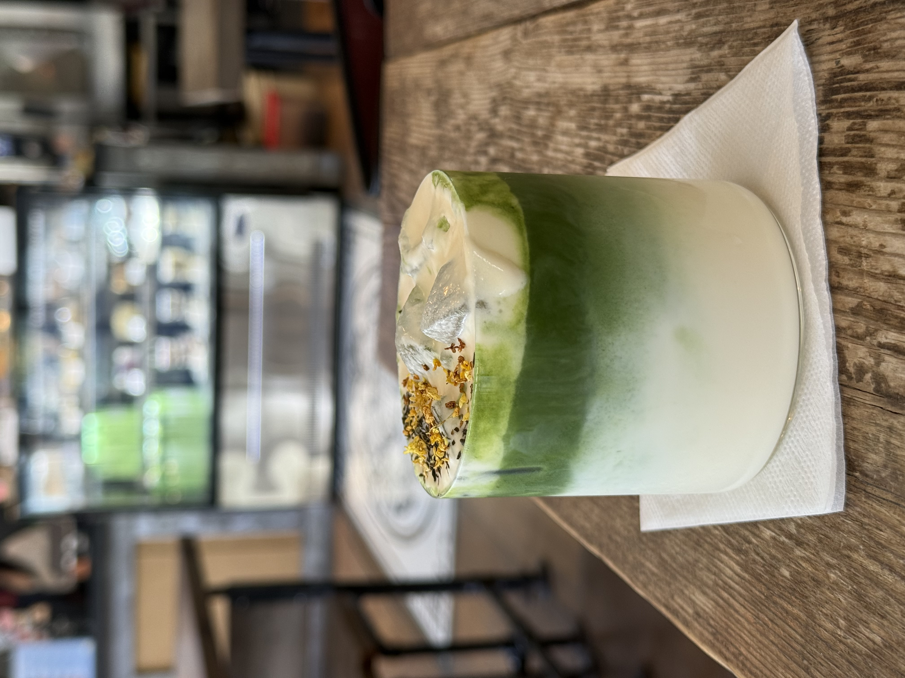
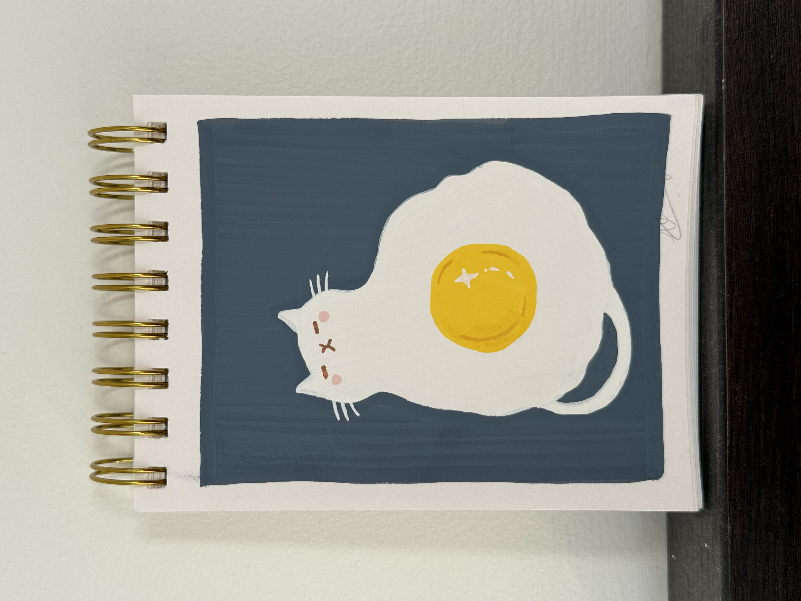
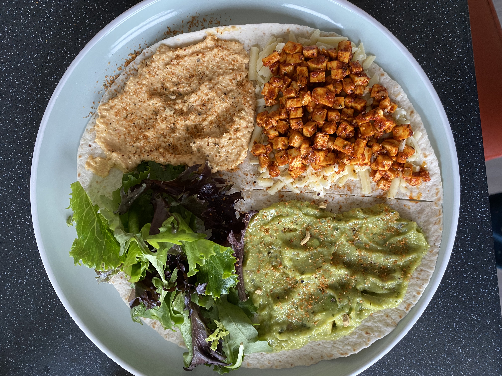

about Lavanya
Hi!
I'm a 3rd year student studying Interactive Arts and Technology at Simon Fraser University, and am looking for work opportunities related to UI/UX Design and Game Design.
I love to integrate and familiarise myself with different techniques and applications of design, and am proficient in Figma, HTML, CSS, Java, and Javascript as well as Adobe Creative Cloud and Microsoft Office Suite. As someone who has always loved all sorts of art and experimented a lot, I hope to continue to explore different ways to express myself and my interests!
P.S. I also immerse myself in various hobbies and creative pass times, some of which you can scroll through :D